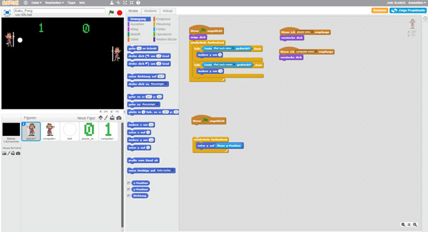

KABU hat sein eigenes Spiel entwickelt! Juhu! Und zwar mit dem Programm Scratch.
In unserem Video zeigen wir dir, wie wir das Spiel KABU-Pong gemacht haben:
Scratch bietet eine Auswahl an Bausteinen, die man zusammenfügen kann, um sein eigenes Spiel zu programmieren. Vielleicht hast du ja auch Lust, ein eigenes Game zu kreieren? Um dir den Einstieg in Scratch zu erleichtern, schau doch mal auf der Seite www.appcamps.de vorbei. Dort findest du unter „Unterrichtsmaterial“ > „Scratch“ hilfreiche Anleitungen und Einstiegsübungen. Damit bist du bestimmt bald fit genug, um dein eigenes Spiel zu programmieren.
Aber vorher hab erst einmal viel Spaß mit unserem KABU-Pong. Das Spiel und die Anleitung dazu findest du, wenn du auf der Seite www.scratch.mit.edu in das Suchfeld kabu_pong eingibst. Wenn du dann neben dem Spiel auf den blauen Button „Schau hinein“ klickst, kannst du dir sogar die Programmier-Karte ansehen, die wir dir im Video kurz vorstellen.

Wir drücken dir die Daumen, dass du in KABU-Pong gegen den Computer-KABU gewinnst.
Tipp: Achte darauf, dass der Adobe Flash Player aktiviert ist (Aktivierung mit rechter Maustaste), denn nur dann kannst du das Spiel starten.